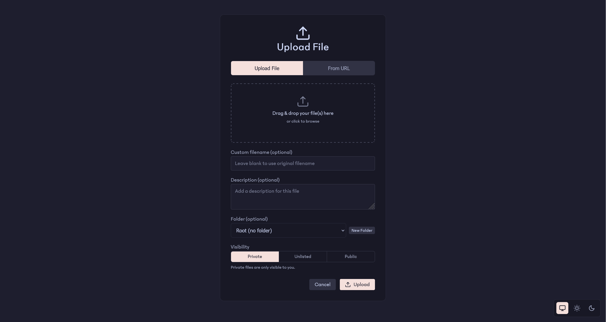
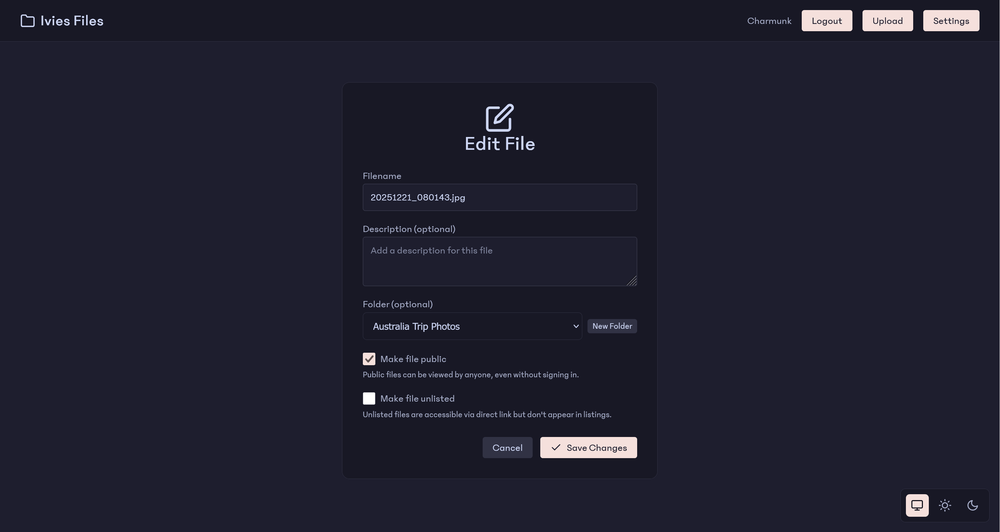
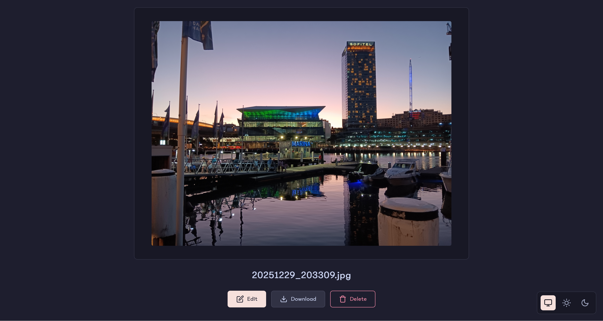
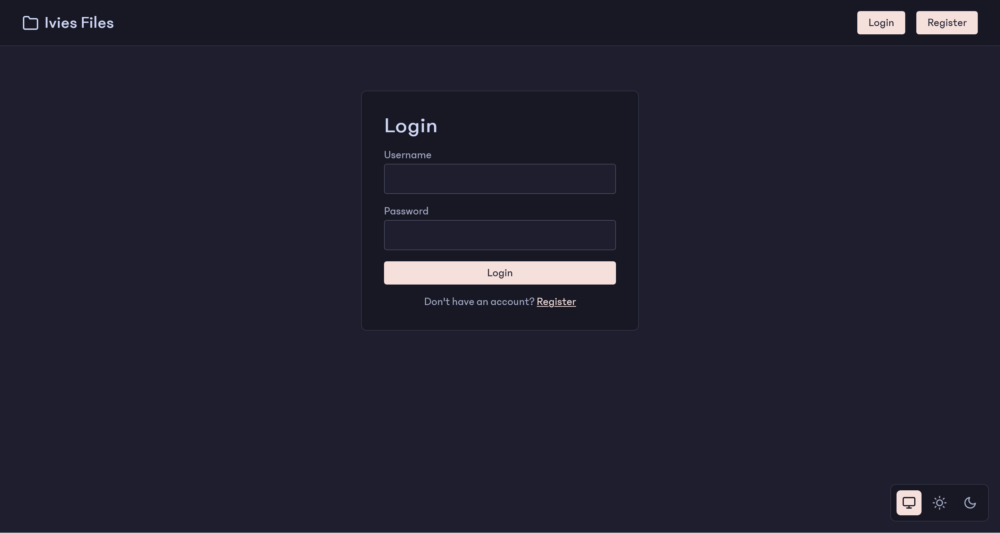
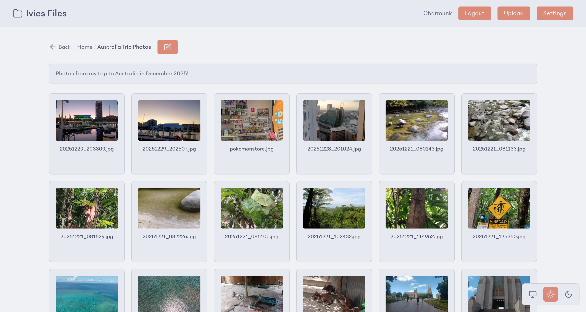
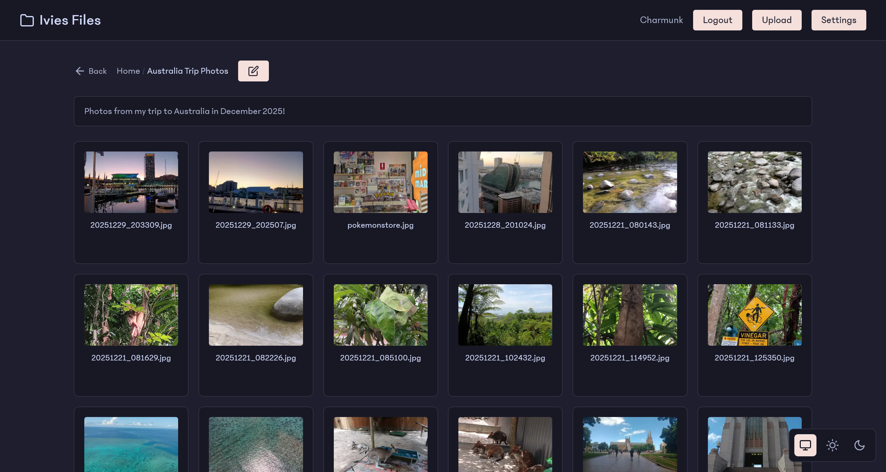
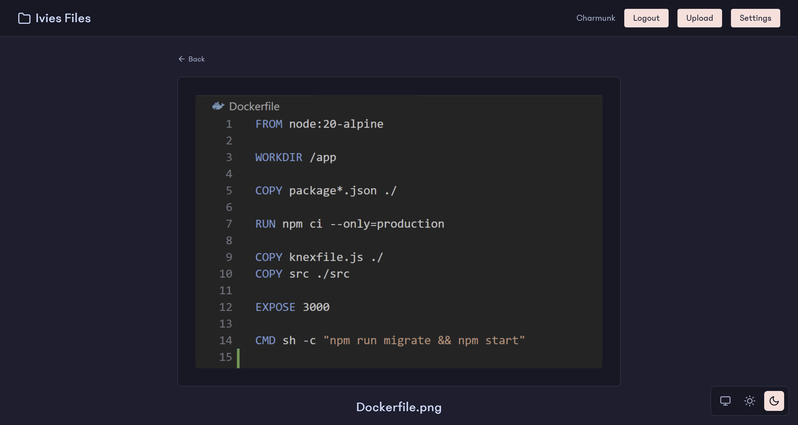

Features
Drag and Drop Uploading.
Upload files with drag and drop, paste images from your clipboard, or import from any URL. Upload multiple files at once with custom filenames and visibility settings.

Folder-Based File Management
Keep your files organized with nested folders. Drag and drop entire folders to upload their contents while preserving the directory structure.

Share Files Instantly
Make any file public with a single click and share it with anyone. Generate clean, shareable links that work without requiring recipients to create an account.

View Files In-Browser
Preview images, documents, and text files directly in your browser without downloading. Displays images and videos and renders markdown beautifully.

Secure by Default
Your files are private until you decide to share them. User authentication with bcrypt password hashing and secure session management keeps your data safe.

Beautiful Light & Dark Themes
Enjoy a clean, modern interface with the Catppuccin color palette. Automatic theme detection respects your system preferences, or switch manually anytime.


Self-Host with Docker
Deploy YAFS on your own server in minutes with Docker. Full control over your data and infrastructure. No vendor lock-in, no monthly fees.
